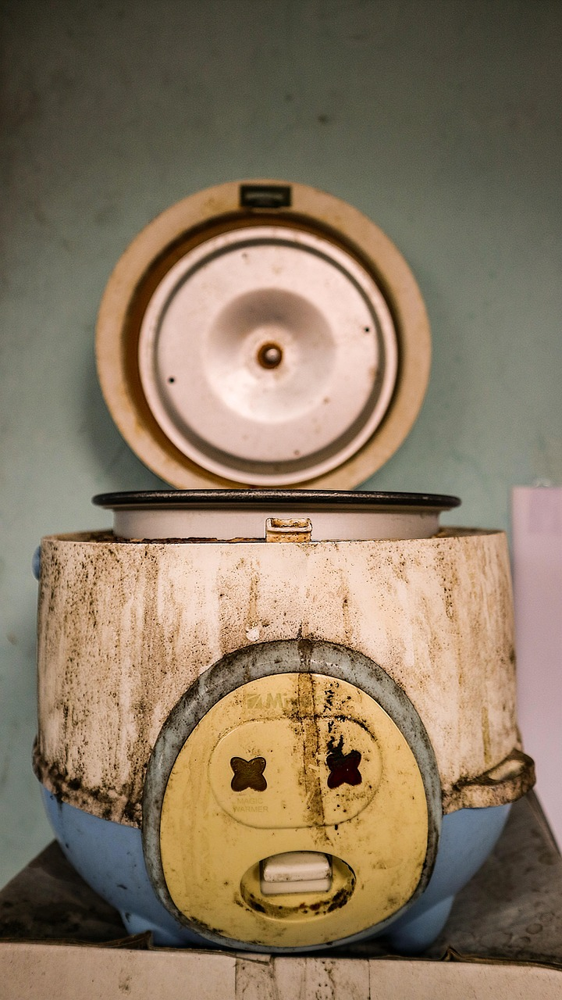
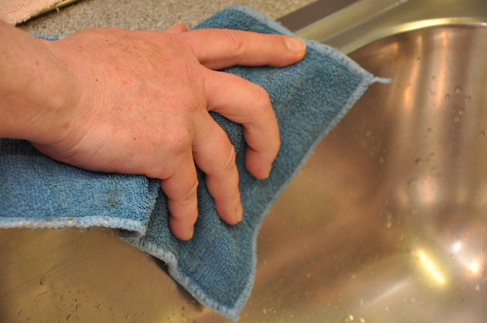

Nồi cơm điện nấu cơm bị sống hoặc khê đáy: 5 việc kiểm tra và chỉnh lại trước khi mua nồi mới

Nồi cơm điện nấu cơm bị sống hoặc khê đáy: 5 việc kiểm tra và chỉnh lại trước khi mua nồi mới: cơm sống hoặc khê đáy phần lớn không phải do nồi đã hỏng, mà do tỉ lệ nước chưa đúng, gioăng nắp bám bẩn làm hở hơi, hoặc mâm nhiệt dính cặn làm nhiệt truyền không đều. Kiểm tra và chỉnh lại 5 việc dưới đây trước, nhiều nồi nấu ngon lại ngay mà chưa cần mua mới.
Nấu nồi cơm, bữa thì cơm sống sượng, bữa lại khê cháy một lớp đáy, nhiều người kết luận nồi đã hỏng và tính mua nồi mới — trong khi chỉ cần chỉnh lại vài thói quen và vệ sinh vài chỗ là cơm lại chín đều.
Cảnh báo an toàn trước khi làm gì
Rút phích cắm và để nồi nguội hẳn trước khi lau rửa hay kiểm tra mâm nhiệt, gioăng nắp. Không nhúng thân nồi — phần chứa điện — vào nước, chỉ rửa lòng nồi và nắp trong đã tháo ra. Nồi có mùi khét, dây điện nóng hoặc cháy, cắm điện là nhảy aptomat thì ngừng dùng và mang thợ kiểm tra, đừng tự tháo phần điện ra sửa.
1. Đong nước theo vạch trong lòng nồi
Điểm chính: cho gạo vào lòng nồi, dàn phẳng mặt gạo rồi đổ nước tới đúng vạch tương ứng với số cốc gạo ở thành trong lòng nồi. Lý do: đong nước theo thói quen "một lóng tay" rất dễ lệch khi lượng gạo thay đổi — thiếu nước cơm sống, thừa nước cơm nhão và dễ trào làm khê đáy. Ví dụ: nấu 2 cốc gạo thì đổ nước tới vạch số 2 dành cho cơm thường, gạo mới và gạo cũ chênh nhau một ít thì chỉnh thêm hoặc bớt một chút ở mẻ sau.
2. Ngâm gạo trước khi bấm nấu
Vo gạo xong để ngâm khoảng 15–20 phút rồi mới bấm nấu, hạt gạo ngậm đều nước thì chín đều từ trong ra ngoài, đỡ bị sống lõi. Gạo lứt cần ngâm lâu hơn, khoảng 45 phút đến vài giờ tùy loại.
Ảnh: juemi / Pixabay
3. Kiểm tra gioăng nắp và van thoát hơi
Gioăng cao su ở nắp trong bám cặn cơm, bị rách hoặc chai cứng sẽ làm hở hơi, cơm lâu chín và dễ sống phía trên. Tháo nắp trong ra rửa sạch, lau khô gioăng, kiểm tra van thoát hơi có bị cơm khô bít kín không, có dị vật thì làm sạch nhẹ nhàng.
4. Lau sạch mâm nhiệt và đáy lòng nồi
Hạt cơm rơi, cặn cháy bám trên mâm nhiệt làm lòng nồi tiếp xúc không đều, chỗ quá nhiệt thì khê, chỗ thiếu nhiệt thì sống. Để nồi nguội hẳn, dùng khăn mềm hơi ẩm lau sạch mâm nhiệt và mặt đáy ngoài của lòng nồi, lau lại bằng khăn khô; đừng dùng búi sắt chà mâm nhiệt.

Ảnh: renateko / Pixabay
5. Đừng nấu quá vạch tối đa của nồi
Nấu nhiều hơn dung tích nồi ghi thì cơm không đủ chỗ nở, phía trên sống mà đáy lại bị nén chặt dễ khê. Cần nấu nhiều thì chia làm hai mẻ hoặc dùng nồi lớn hơn, đừng cố nhồi đầy tới miệng lòng nồi.
Giới hạn cần nhớ
Đã chỉnh đủ cả 5 việc trên mà cơm vẫn sống hoặc khê như cũ thì khả năng cao cảm biến nhiệt hoặc mâm nhiệt đã hỏng — mang ra thợ kiểm tra, đừng cố nấu tiếp. Lòng nồi bong lớp chống dính nhiều, méo hoặc nứt thì nên thay lòng nồi mới hoặc thay nồi, không dùng tiếp.
Kết lại: mẻ cơm tới, đong nước theo vạch trong lòng nồi, ngâm gạo 15 phút trước khi bấm nấu và lau sạch mâm nhiệt — tự xem cơm có chín đều hơn mẻ trước không.
- Muốn bài viết có thêm người hỏi mua? Xem các gói tăng tương tác tại viettuongtac.com.
- Cần một website bán hàng để khách xem mẫu và đặt hàng dễ hơn? Xem mẫu tại webkhoinguon.com.
💬 Bình luận
Đang tải bình luận…